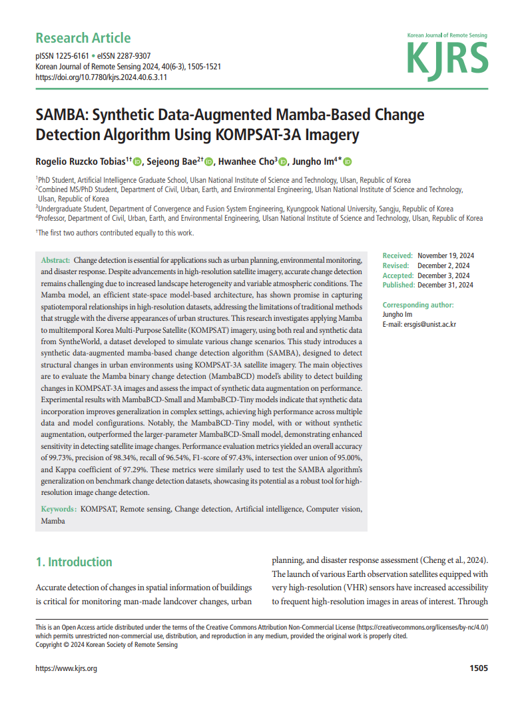
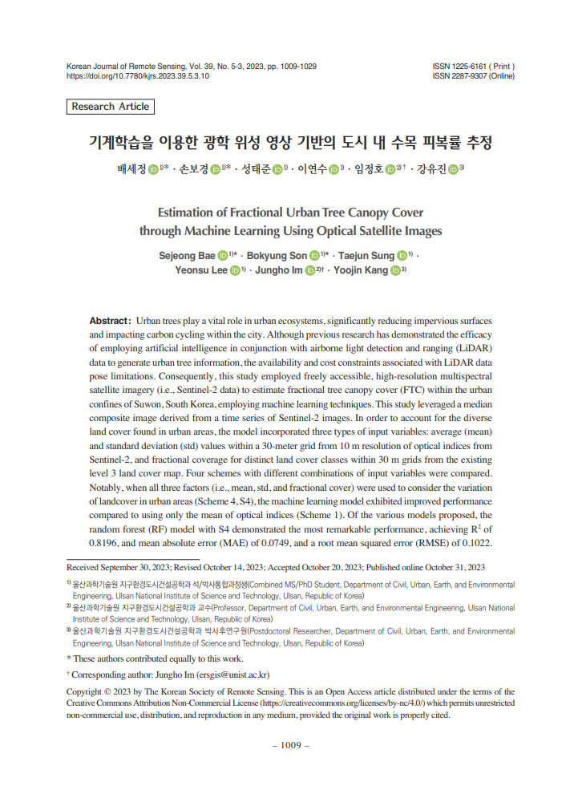
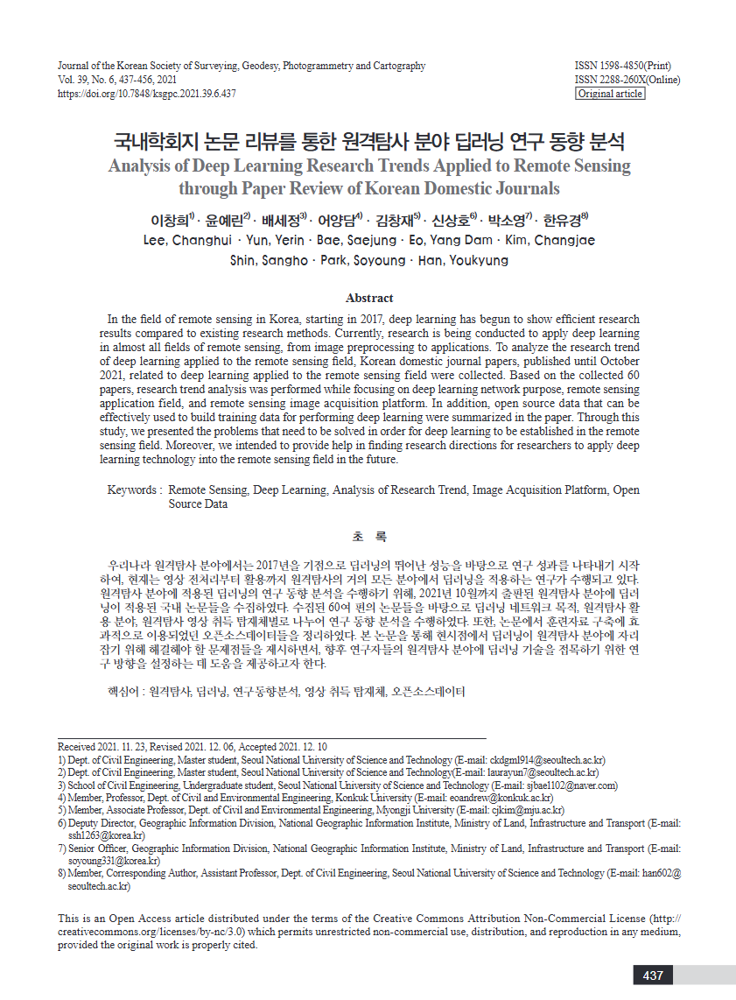

Sejeong Bae
배세정, 裵勢正
South Korea
Combined M.S. & Ph.D. Student
UNIST, Ulsan National Institute of Science and Technology
Affiliation
Instructor: Prof. Jungho Im
Member of the Intelligent Remote sensing and geospatial Information Science (IRIS) Lab [Link]
Research Interests
- Environmental Remote Sensing
- Terrestrial Carbon Monitoring
- Artificial Intelligence
- Deep learning
Domestic Journal Articles
-
Tobias, R. R., Bae, S., Cho, H., & Im, J. (2024). SAMBA: Synthetic Data-Augmented Mamba-Based Change Detection Algorithm Using KOMPSAT-3A Imagery. Korean Journal of Remote Sensing, 40(6_3), 1505-1521. (2024.12.31) 2024
-
Bae, S., Son, B., Sung, T., Lee, Y., Im, J., & Kang, Y. (2023). Estimation of Fractional Urban Tree Canopy Cover through Machine Learning Using Optical Satellite Images. 기계학습을 이용한 광학 위성 영상 기반의 도시 내 수목 피복률 추정. Korean Journal of Remote Sensing, 39(5), 1009-1029. (2023.10.31) 2023
-
Lee, C., Yun, Y., Bae, S., Eo, Y. D., Kim, C., Shin, S., ... & Han, Y. (2021). Analysis of deep learning research trends applied to remote sensing through paper review of Korean domestic journals. 국내학회지 논문 리뷰를 통한 원격탐사 분야 딥러닝 연구 동향 분석. Journal of the Korean Society of Surveying, Geodesy, Photogrammetry and Cartography, 39(6), 437-456. (2021.12.31) 2021
International
- Aug 07, 2025 2025 IEEE International Geoscience and Remote Sensing Symposium (IGARSS)
- Jul 02, 2025 2025 CMAS-Asia-Pacific and Regional IUAPPA Conference
- May 15, 2025 International Symposium on Remote Sensing (ISRS)
- Jun 24, 2024 Asia Oceania Geosciences Society (AOGS)
Domestic
- Oct 23, 2025 Korean Society of Remote Sensing (KSRS) Autumn Conference🏆
- Oct 17, 2024 Korean Society of Remote Sensing (KSRS) Autumn Conference
- May 30, 2025 Korean Association of Geographic Information Studies (KAGIS) Spring Conference🏆
- Apr 26, 2024 Korean Association of Geographic Information Studies (KAGIS) Spring Conference🏆
- Nov 15, 2023 Korean Society of Remote Sensing (KSRS) Autumn Conference
- Nov 05, 2021 Korean Society of Surveying, Geodesy, Photogrammetry and Cartography (KSGPC)🏆